Скелет финансовой модели
Вертикальный урок по теме 2.2: как собрать структуру доходов, OPEX и CAPEX до появления цифр.
Начать →Термины урока
- NOI
- чистый операционный доход: доход от аренды минус операционные расходы. Проще: доход от аренды минус расходы.
- CAPEX
- капитальные затраты: разовые вложения в создание или реконструкцию объекта. Проще: вложения в стройку и ремонт.
- OPEX
- операционные расходы: регулярные платежи за содержание объекта. Проще: регулярные счета за эксплуатацию.
- WBS
- иерархический перечень работ или статей затрат. Проще: структура статей затрат.
- NPV и IRR
- NPV — чистая приведённая стоимость; IRR — внутренняя норма доходности. Проще: дисконтированные показатели проекта.
- ЕГРН
- Единый государственный реестр недвижимости. Проще: реестр с данными об объекте.
- ТП
- трансформаторная подстанция. Проще: подстанция, дающая зданию электричество.
- ПЗЗ
- правила землепользования и застройки города. Проще: что и как можно строить на участке.
- БТИ
- бюро технической инвентаризации; здесь: технический паспорт и поэтажные планы здания. Проще: официальные чертежи и экспликация помещений.
- ТУ
- технические условия, которые выдаёт ресурсоснабжающая организация на подключение и мощность. Проще: условия, на которых здание получает ресурс.
- GBA и GLA
- GBA: общая площадь здания; GLA: сдаваемая в аренду площадь. Проще: вся площадь и та её часть, что приносит доход.
Как устроен скелет модели
Коллеги, мы переходим к теме 2.2, которая открывает двери в глубокое финансовое планирование нашего проекта. На этапе 2.1 мы с вами отобрали жизнеспособные сценарии, провели базовый срез их операционной эффективности и составили пространственный баланс. Теперь нам нужно превратить этот концептуальный баланс в профессиональную инвестиционную модель. И первое, что мы должны сделать — это построить её непоколебимый каркас.
Собрать скелет финансовой модели
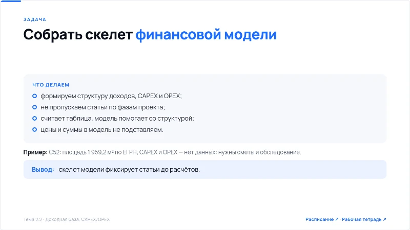
Что именно мы делаем на этом этапе и почему он вынесен в отдельный, критически важный блок нашей работы? Наша главная задача сегодня — сформировать исчерпывающую структуру доходов, структуру капитальных затрат и структуру операционных расходов. Мы обязаны выстроить логику так, чтобы не пропустить ни одной статьи по всем фазам реализации проекта. Считать все итоговые финансовые показатели будет исключительно таблица на основе строгих математических формул, а языковая модель лишь помогает нам с формированием этой структуры, подсказывая неочевидные или скрытые пункты, о которых мы могли забыть. Важнейшее правило текущего этапа: цены, рыночные ставки и конкретные суммы в модель мы пока не подставляем. Мы строим исключительно пустой, но максимально подробный скелет.
Давайте посмотрим на наш базовый пример — объект C52. Площадь здания составляет 1 959,2 м² по выписке ЕГРН. Однако, если мы прямо сейчас запросим точные постатейные данные по капитальным затратам и операционным расходам для C52, мы получим один-единственный ответ со статусом «нет данных: нужен документ». Без полноценного строительного проекта и реальных эксплуатационных договоров цифр у нас просто нет. Вывод по этому слайду предельно четок: скелет модели фиксирует статьи до появления каких-либо расчётов и сумм, создавая безопасную базу для будущей экономики.
Зачем и экономика
Почему мы так маниакально разделяем создание структуры и поиск самих цен? В экономике девелопмента пропущенная статья затрат бьет по проекту гораздо больнее, чем просто неточная или устаревшая цена. Если вы забыли предусмотреть статью «усиление фундаментов» или «гидроизоляция» в структуре капитальных затрат, а при выходе строителей на площадку оно внезапно потребовалось, ваш проект может остановиться из-за масштабного кассового разрыва. Подрядчики простаивают, время идет, а деньги в бюджете на эти работы не заложены. Пропущенная статья неизбежно искажает ваш финальный NOI (чистый операционный доход, то есть доход от аренды минус операционные расходы) и ломает будущую окупаемость, которую вы уже пообещали инвестору. Создавая скелет до появления цифр, вы жестко страхуете себя от этих слепых зон, заставляя нейросеть выгрузить сотни возможных строк затрат для проверки.
Контекст и история
В классическом проектном управлении и инвестиционном анализе то, что мы сейчас называем «скелетом», именуется иерархической структурой работ. Практика рынка редевелопмента показывает, что неопытные девелоперы часто собирают бюджет предельно укрупненно, в три-четыре абстрактные строки: «ремонт», «оборудование», «фасад», «разное». Однако профессиональный стандарт планирования требует глубокой детализации каждой фазы проекта до того самого уровня, где конкретную статью можно передать узкому подрядчику для точного осмечивания. Бюджеты, состоящие из общих фраз, никогда не проходят внутренний контроль рисков у инвесторов, так как под абстракцией всегда прячутся непредвиденные расходы.
откройте пустой файл в табличном редакторе и озаглавьте три будущих рабочих листа: «Структура доходов», «Структура капитальных затрат» и «Структура операционных расходов». Это ваше рабочее пространство на эту тему.
Давайте углубимся в то, почему именно пропуск статьи в этом скелете способен разрушить самую привлекательную на первый взгляд инвестиционную доходность.
Зачем скелет модели
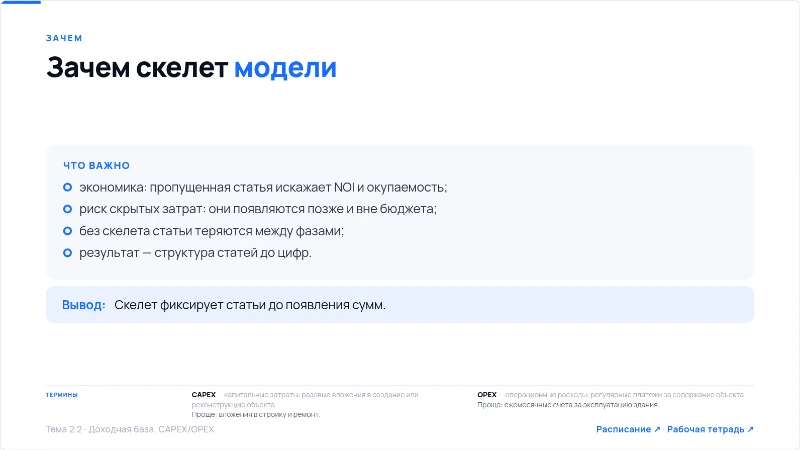
Скелет модели — это далеко не просто список слов или формальность. В экономике любая пропущенная на старте статья искажает ваш финальный показатель NOI и ставит под угрозу будущую окупаемость. Главная угроза редевелопмента — это риск скрытых затрат: они появляются значительно позже, когда стройка уже идет, и всегда оказываются вне изначально утвержденного бюджета. Без жесткого, детализированного скелета важные статьи постоянно теряются между разными фазами проекта. Например, проектировщик искренне думает, что вентиляцию учли строители, а строители думают, что оборудование закупает заказчик напрямую. Результат нашего текущего аналитического шага — это максимально подробная структура всех статей до появления в ней реальных сумм.
Для четкого понимания этих процессов введем несколько ключевых финансовых терминов, на которых строится язык инвестиций. Расшифровка: CAPEX — капитальные затраты: разовые вложения в создание или реконструкцию объекта. Проще: вложения в стройку и ремонт. Расшифровка: OPEX — операционные расходы: регулярные платежи за содержание объекта. Проще: регулярные счета за эксплуатацию. Расшифровка: WBS — иерархический перечень работ или статей затрат. Проще: структура статей затрат. Вывод по данному слайду предельно четок: скелет надежно фиксирует статьи до появления сумм, исключая финансовый хаос на этапе проведения тендеров среди подрядчиков.
Зачем и экономика
Этот шаг аналитики напрямую защищает норму доходности вашего проекта от обрушения. Предположим, вы забыли внести в структуру CAPEX такую статью, как модернизация электрической подстанции. Когда на этапе запуска выяснится, что вашим якорным арендаторам банально не хватает мощности, вам придется экстренно вынимать из оборота значимую сумму. Это немедленно увеличит срок окупаемости проекта или вовсе сделает его убыточным из-за незапланированного кредита. Взаимосвязь здесь самая прямая: системная ошибка в структуре затрат сегодня — это катастрофическая ошибка в NOI и окупаемости завтра.
Контекст и история
Глубокая разница между новым строительством и редевелопментом старого фонда заключается именно в пугающем количестве скрытых угроз. При строительстве в чистом поле вы можете контролировать каждый куб бетона с нуля. При реконструкции старого здания вы всегда покупаете «кота в мешке». Перерасход бюджета в проектах редевелопмента часто составляет существенную часть изначального бюджета именно из-за того, что на старте не был собран исчерпывающий перечень затрат, дотошно учитывающий все скрытые особенности старого фонда. Чем детальнее скелет на берегу, тем спокойнее плавание.
вспомните самую неприятную, неожиданную статью затрат из вашего прошлого опыта ремонта, стройки или переезда, и выпишите ее на поля. Ваш будущий скелет модели должен уметь предвосхищать именно такие сюрпризы.
Теперь давайте концептуально разделим все эти затраты по времени и финансовому смыслу, чтобы понимать, как именно они влияют на операционный доход.
Контекст: CAPEX, OPEX и доходы
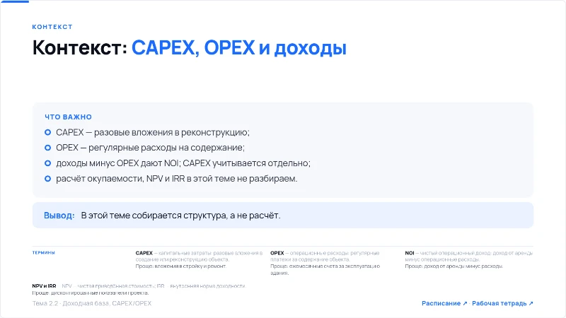
Чтобы собрать рабочий скелет финансовой модели, нужно чётко разграничить три группы денежных потоков. Первая группа — CAPEX, то есть разовые вложения в реконструкцию объекта до того, как он начнёт приносить стабильную выручку. Вторая группа — OPEX, то есть регулярные, повторяющиеся расходы на содержание уже работающего здания. Третья группа — доходы, которые объект генерирует от аренды и дополнительных сервисов.
Базовая логика операционной части модели проста: доходы минус OPEX дают NOI. Расшифровка: NOI — чистый операционный доход: доход от аренды минус операционные расходы. Проще: доход от аренды минус расходы.
Ключевое правило этого этапа: CAPEX учитывается абсолютно отдельно от операционного потока. Разовые вложения в стройку и ремонт не вычитаются из арендной платы за отдельный месяц, они живут в собственном графике. Вопросы полной окупаемости, а также показатели NPV и IRR в этой теме не рассматриваем, смотрите тему 2.4. Расшифровка: NPV — чистая приведённая стоимость; IRR — внутренняя норма доходности. Проще: дисконтированные показатели проекта. Вывод по слайду: в этой теме собирается именно структура потоков, а не итоговый расчёт.
Зачем и экономика
Жёсткое разделение этих трёх корзин страхует модель от логического искажения. Если смешать разовые капитальные вложения с регулярными расходами — например, записать замену кровли или инженерных стояков в ежемесячную эксплуатацию, — расчётный NOI резко просядет. В результате операционно сильный объект на бумаге будет выглядеть убыточным, и перспективный проект отклонят.
Обратная ошибка не менее опасна: если спрятать регулярные расходы на содержание в строительный бюджет, операционный доход окажется искусственно завышенным. Разведение потоков позволяет отдельно видеть, сколько денег нужно вложить в запуск объекта и сколько денег он способен стабильно приносить после открытия.
Контекст и история
На рынке коммерческой недвижимости стоимость здания как инвестиционного актива принято оценивать через его устойчивый операционный поток, то есть через NOI. Капитальные затраты при этом формируют стоимость создания или обновления самого актива. Именно поэтому в профессиональной практике текущее обслуживание никогда не смешивают с масштабной реконструкцией: без такого разделения невозможно прозрачно оценить ни эффективность управления зданием, ни реальную цену входа в проект.
выпишите для своего объекта по три примера статей, которые точно относятся к CAPEX, и по три статьи, которые относятся к OPEX, и проверьте, нет ли среди них пересечений.
Чтобы наглядно увидеть, как эти три группы потоков связываются между собой в единой архитектуре, перейдём к схеме финансовой модели.
Схема финансовой модели
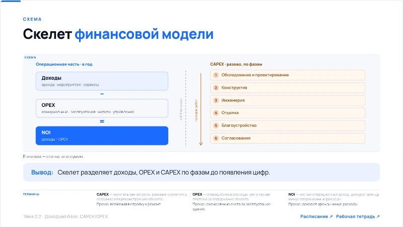
На слайде схема скелета финансовой модели. Она читается в две колонки. Левая колонка — операционная часть, её читаем сверху вниз. Вверху блок «Доходы»: сюда собираются все источники поступлений от работы объекта, например аренда помещений, мероприятия, дополнительные сервисы. Под ним со знаком «минус» блок «OPEX»: регулярные расходы на содержание здания, то есть коммунальные платежи, эксплуатация, налоги, управление. Внизу со знаком «равно» итог операционной части, «NOI»: доходы минус OPEX за год.
Правая колонка — «CAPEX», и она стоит отдельно: между колонками проведена черта с подписью «в NOI не входит». Внутри CAPEX шесть фаз, тоже сверху вниз, в порядке выполнения работ: обследование и проектирование, конструктив, инженерия, отделка, благоустройство, согласования. В каждой клетке схемы пока только названия статей, сумм нет. Вывод по слайду: скелет разделяет доходы, OPEX и CAPEX по фазам до появления первых цифр.
Зачем и экономика
Разделение блока CAPEX на шесть фаз решает задачу управления деньгами во времени. Реконструкция не оплачивается единым платежом в первый день: сначала финансируются обследование и проектирование, затем конструктив и инженерия, и только потом отделка, благоустройство и финальные согласования. Если свалить все капитальные затраты в один общий список без фаз, невозможно корректно спланировать график финансирования.
В деньгах это оборачивается двумя рисками. Либо команда привлекает всю сумму заранее и переплачивает значимую сумму за обслуживание простаивающих средств, либо пропускает обязательные ранние этапы, из-за чего стройка останавливается на середине в ожидании согласований или переделки конструктива.
Контекст и история
Поэтапная структура бюджета давно стала базовым стандартом в управлении проектами реконструкции. Каждая фаза имеет собственный измеримый результат и контрольную точку, после которой принимается решение о переходе к следующему этапу. Когда бюджет сразу разложен по фазам, он становится понятным не только автору концепции, но и инженерам, сметчикам и партнёрам по проекту.
перенесите эту схему в рабочую тетрадь — две колонки: слева «Доходы − OPEX = NOI» сверху вниз, справа шесть фаз CAPEX — чтобы держать структуру перед глазами при сборке таблиц.
Теперь, когда общая схема финансовой модели зафиксирована, перейдём к следующему слайду и посмотрим, какие проверенные данные уже есть для этой модели по учебному образцу C52.
C52: что известно для модели
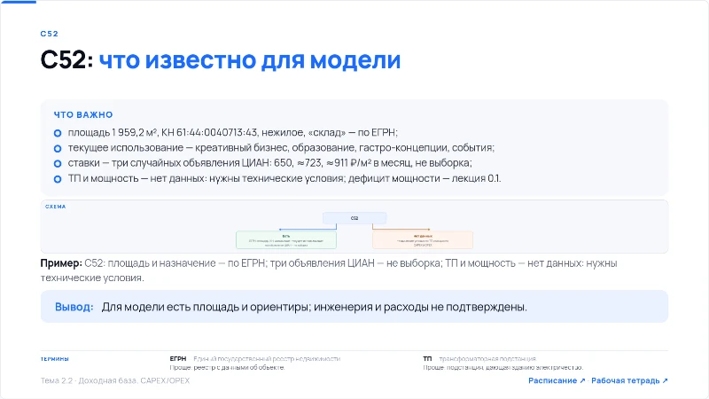
Давайте спустимся с уровня теории на землю и посмотрим, какие именно факты мы можем положить в основу нашей модели на примере базового объекта C52. Мы оперируем исключительно проверенными данными. Мы знаем площадь — 1 959,2 м² (источник: ЕГРН). Мы знаем кадастровый номер самого здания: 61:44:0040713:43. По документам это нежилое здание, по ЕГРН наименование «склад» (напоминаю, это юридическое наименование, а не текущее использование). Текущее использование: креативный бизнес, образование, гастро-концепции, события.
Что у нас есть по доходам? Ставки представлены тремя случайными объявлениями из ЦИАН: 650, примерно 723 и примерно 911 ₽/м² в месяц. Повторяю: это не рыночная выборка, это лишь предварительная иллюстрация. А что по инженерии? Из качественного осмотра (лекция 0.1) мы знаем о дефиците электрической мощности. Но точных данных по выделенным киловаттам и резервам ТП у нас нет: нужны технические условия. Вывод по нашему объекту: для старта модели у нас есть общая площадь и смутные ориентиры, но инженерия и точные постатейные расходы абсолютно не подтверждены.
Зачем и экономика
Какую финансовую угрозу несет выявленный дефицит электрической мощности? Это классическая «скрытая статья» капитальных затрат. Если вы не заложите в структуру CAPEX расходы на модернизацию сетей, вы просто не сможете запустить арендаторов. Дефицит мощности не привязан к какой-то одной функции: современный офис, ресторан или клиника — всем нужно электричество. Забыв включить эту статью в скелет бюджета, вы рискуете обнаружить на этапе ввода в эксплуатацию нехватку значимой суммы. Это обрушит окупаемость проекта, так как вам придется привлекать экстренное финансирование на подключение.
Контекст и история
В практике отечественного редевелопмента старых промышленных территорий инженерные сети всегда являлись главным «узким горлышком» проекта. Заводы советской постройки часто имели огромные лимиты потребления, но за десятилетия простоя эти лимиты были перераспределены городом. Девелоперы, покупая такие здания, часто наивно полагают, что мощность осталась за объектом автоматически. Практика показывает, что переподключение или модернизация ТП может составлять самую непредсказуемую часть бюджета реконструкции.
Что нужно на входе
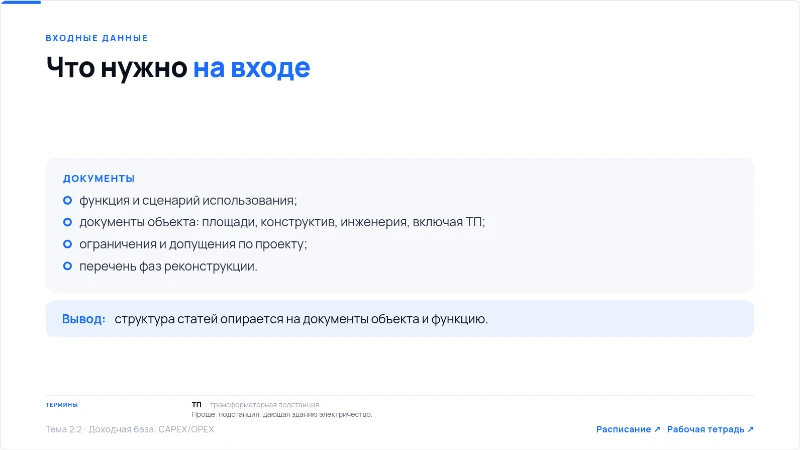
Мы не можем создать адекватную структуру затрат из пустоты. Что нужно на входе для формирования надежного финансового скелета? Во-первых, четко определенная функция и сценарий использования (победитель из тестов HBU). Во-вторых, детальные документы объекта: точные площади, данные по конструктиву, инженерия, включая мощности ТП. В-третьих, юридические ограничения и финансовые допущения по проекту. В-четвертых, утвержденный перечень фаз реконструкции: обследование и проектирование, конструктив, инженерия, отделка, благоустройство, согласования. Вывод по слайду: структура статей напрямую опирается на документы объекта и жестко зависит от выбранной коммерческой функции. Одинаковых шаблонов CAPEX для склада и для клиники не существует.
Зачем и экономика
Почему структура статей так жестко привязана к функции? Представим учебный пример (не данные C52): вы делаете редевелопмент под ресторанный кластер. У ресторанов есть специфические требования: мощная приточно-вытяжная вентиляция, промышленные жироуловители, отдельные шахты выброса воздуха. Если вы поручите составить бюджет просто на «ремонт кирпичного здания», вам выдадут стандартный шаблон для офиса. В нем не будет жироуловителей. Вы начнете стройку, и Роспотребнадзор не даст вам открыться. Вы понесете колоссальные убытки из-за одной забытой строки в структуре затрат.
Контекст и история
На развитых рынках недвижимости профессиональные консультанты используют жестко регламентированные, узкоспециализированные классификаторы затрат (WBS) в зависимости от класса актива. Никто не пишет бюджеты «с чистого листа». Базы данных хранят специфические строки для гостиниц или торговых центров, чтобы исключить риск человеческой забывчивости на старте инвестиционного цикла.
Итог главы
Минимальный результат слушателя
- В рабочей тетради или в табличном редакторе создан черновик скелета финансовой модели для собственного объекта.
- Сформированы три раздельных списка статей: структура возможных доходов, структура регулярных расходов (OPEX) и структура капитальных затрат (CAPEX).
- Список капитальных затрат (CAPEX) разделен на логические фазы: обследование и проектирование, конструктив, инженерия, отделка, благоустройство, согласования.
Что не разбираем
- Тексты промптов для генерации структуры затрат в языковых моделях (это тема следующего практического занятия).
- Заполнение полученного скелета реальными ценами и суммами (это делается после сбора смет).
- Расчет сложных инвестиционных показателей окупаемости: NPV и IRR (смотрите тему 2.4).
Оговорки
| Источник | Можно утверждать | Нельзя утверждать |
|---|---|---|
| Выписка ЕГРН | Базовые характеристики здания, кадастровый номер и площадь. | Реальное состояние инженерии и потребность в ремонте. |
| Скелет бюджета (WBS) | Перечень необходимых работ и статей затрат по фазам. | Точную стоимость работ без коммерческих предложений. |
| Визуальный осмотр (лекция 0.1) | Наличие явных дефицитов, требующих занесения в структуру CAPEX. | Бюджет на устранение дефицита без технических условий. |
Собираем скелет с нейросетью
Сервисы: сравнение
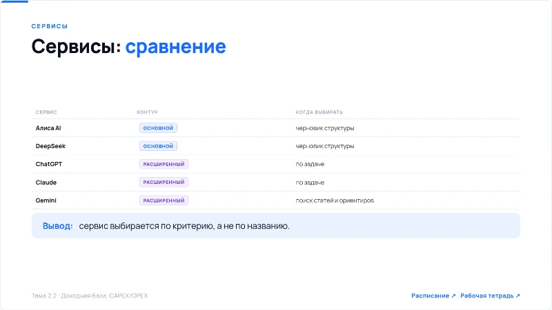
Перед нами таблица сравнения сервисов для этой конкретной задачи. Обратите внимание, что мы не загружаем сюда огромные документы вроде ПЗЗ. Мы будем подавать алгоритму лишь короткое описание. В основном контуре у нас Алиса AI и DeepSeek. Оба сервиса отлично формируют структуру и списки статей по вашему описанию. В расширенном контуре ChatGPT и Claude могут дополнительно принимать загруженные файлы, если вы всё же захотите дать им больше контекста. Gemini (также в расширенном контуре) выделяется тем, что при включённом поиске он может предложить источники со ссылками на внешние ресурсы. Вывод по этому слайду неизменен: сервис всегда выбирается по критерию решаемой задачи, а не по громкому названию бренда. В данном случае наша задача — получить умный, детализированный чек-лист затрат.
Зачем и экономика
Цена неверного выбора сервиса на этом этапе измеряется вашим потерянным временем. Если вы выберете текстовую модель, которая плохо умеет работать с таблицами, вы получите вязкое эссе вместо четкого классификатора. Если вы выберете модель с отключенным поиском, вы не получите ссылок на внешние ориентиры. Три критерия выбора для нашей текущей задачи: способность выдавать ответ в строгом табличном формате, умение вытаскивать «скрытые» статьи затрат из базового описания и, как дополнительный бонус, способность указывать источники (ссылки).
Контекст и история
Как перечни статей собирали раньше? Девелоперы использовали гигантские, передаваемые из уст в уста Excel-шаблоны смет и отраслевые классификаторы. Это была кропотливая ручная работа. В чем отличие работы с нейросетью? Алгоритм не просто выдает статичный шаблон, он способен адаптировать классификатор под конкретную, даже самую узкую функцию, которую вы придумали на этапе HBU, добавив туда те статьи, которые в стандартном офисном шаблоне отсутствуют.
выберите сервис, в котором вы будете генерировать структуру статей, ориентируясь на наличие функции поиска или возможность вывода таблиц.
Давайте выберем флагманский инструмент, который даст нам максимум пользы при минимальных вводных.
Флагман по критерию: Gemini
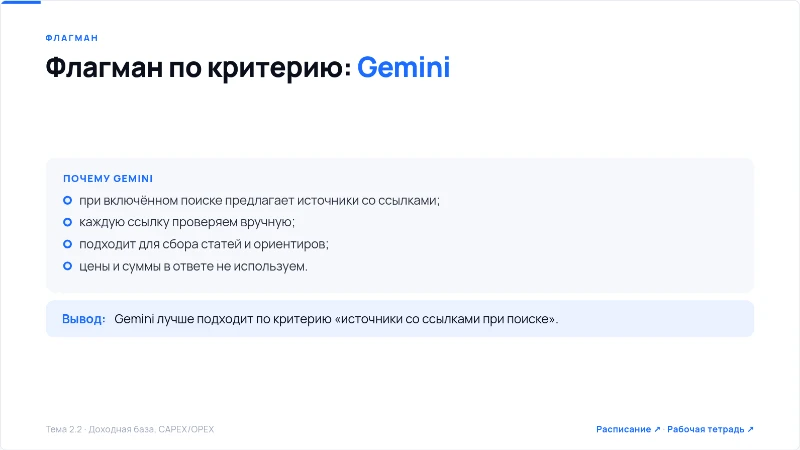
Нашим флагманом для текущей задачи назначается Gemini. Почему мы выбираем именно его? Главный критерий: при включённом поиске этот сервис способен предлагать источники со ссылками на внешний интернет. Нам нужно жестко понимать: каждую ссылку, которую выдает алгоритм, мы проверяем вручную. Ссылка — это не гарантия достоверности, это лишь маршрут для проверки. Этот сервис отлично подходит для сбора структуры статей и поиска предварительных ориентиров. Но важнейшее правило остается незыблемым: цены и суммы, которые могут появиться в ответе модели, мы в нашу финансовую модель не используем. Вывод: Gemini лучше подходит по критерию «источники со ссылками при поиске», что экономит нам время на первичный сбор бенчмарков.
Зачем и экономика
Здесь мы сталкиваемся с фундаментальным риском доверия машинному интеллекту. Наличие красивой синей ссылки в ответе нейросети не делает написанный факт правдой. Ссылка может вести на несуществующую страницу или на статью, которая вообще не имеет отношения к вопросу. Если вы, как инвестор, поверите такой ссылке без перехода по ней, вы заложите в проект ошибку. Однако цена ручной проверки каждой ссылки несоизмеримо меньше, чем цена фатальной ошибки в бюджете. Мы используем этот сервис не как оракула, а как быстрого библиографа.
Контекст и история
Работа с внешними источниками всегда была слабой стороной ранних языковых моделей. Они придумывали названия статей и авторов. Современные сервисы с доступом в интернет умеют агрегировать поисковую выдачу. Но ответственность за применение найденной информации всегда лежит на аналитике.
проверьте в выбранном вами сервисе (особенно если это Gemini), включена ли функция доступа к поиску.
Теперь, когда инструмент выбран, мы должны поставить ему задачу. Мы разберем три разных промпта, каждый из которых отвечает за свою финансовую «корзину».
Промпт для структуры CAPEX
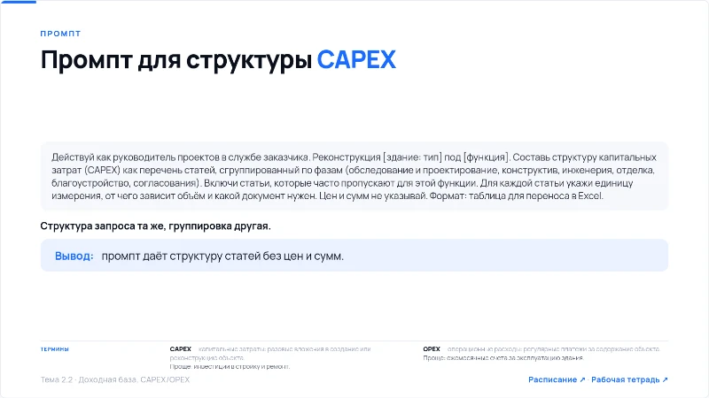
Мы переходим к первому из трех главных запросов. Этот промпт отвечает за формирование капитальных затрат.
Давайте подробно разберем этот промпт часть за частью. Вывод по этому слайду: промпт даёт исключительно структуру статей без цен и сумм. Первая часть — роль: «Действуй как руководитель проектов в службе заказчика». Эта фраза задает профессиональную оптику. Мы блокируем попытки нейросети отвечать как строительный блогер или дизайнер интерьеров. Руководитель проектов мыслит фазами, рисками и документами. Вторая часть — переменные: «Реконструкция [здание: тип] под [функция]». Здесь алгоритм связывает исходные данные объекта с выбранной на шаге HBU функцией. Третья часть — группировка: «сгруппированный по фазам...». Мы жестко перечисляем шесть фаз: обследование и проектирование, конструктив, инженерия, отделка, благоустройство, согласования. Мы не позволяем алгоритму выдумывать свою структуру времени. Четвертая часть: «Включи статьи, которые часто пропускают для этой функции». Мы эксплуатируем способность нейросети находить неочевидные связи в огромных массивах текста, вытаскивая на поверхность специфические угрозы. Пятая часть — три поля на статью: «укажи единицу измерения, от чего зависит объём и какой документ нужен». Статья без единицы измерения бесполезна для сметчика. Шестая часть — запрет: «Цен и сумм не указывай». Мы обрубаем фантазии на корню. Седьмая часть — формат: «таблица для переноса в Excel». Ответ сразу готов к работе.
Сквозной учебный пример, не данные C52: Наше вымышленное здание бывшей насосной станции, сценарий «Студия йоги и пилатеса». Как выглядит фрагмент таблицы в ответе? (Внимание, это не дословный ответ модели, а иллюстрация логики). Фаза «Обследование и проектирование». Название статьи: Инструментальное обследование несущих конструкций. Единица измерения: квадратный метр площади здания. От чего зависит объем: от площади и степени износа. Какой документ нужен: техническое заключение о состоянии конструкций. Фаза «Инженерия». Название статьи: Монтаж приточно-вытяжной вентиляции. Единица измерения: кубические метры в час (куб.м/ч). От чего зависит объем: от объема залов и нормативов воздухообмена для спортивных объектов. Какой документ нужен: проект ОВ (отопление и вентиляция) и спецификация оборудования. Сумм в таблице нет, но структура идеальна.
Действуй как руководитель проектов в службе заказчика. Реконструкция [здание: тип] под [функция]. Составь структуру капитальных затрат (CAPEX) как перечень статей, сгруппированный по фазам (обследование и проектирование, конструктив, инженерия, отделка, благоустройство, согласования). Включи статьи, которые часто пропускают для этой функции. Для каждой статьи укажи единицу измерения, от чего зависит объём и какой документ нужен. Цен и сумм не указывай. Формат: таблица для переноса в Excel.
Зачем и экономика
Каждую часть этого промпта мы вписали для предотвращения конкретной ошибки, которая стоит денег. Назначение роли руководителя проектов предотвращает ошибку поверхностного, потребительского взгляда. Иначе алгоритм забывает про согласования и технический надзор, которые съедают значимую сумму инвестиций. Группировка по шести строгим фазам предотвращает управленческий хаос. Если не заставить нейросеть разделить затраты на обследование и отделку, вы не сможете правильно распланировать транши банковского кредита, что приведет к переплатам по процентам. Фраза «статьи, которые часто пропускают» решает задачу управления рисками. Именно здесь всплывают такие затраты, как, например, вывоз специфического строительного мусора или дополнительные согласования с экологами, отсутствие которых позже останавливает стройку. Требование указать «какой документ нужен» предотвращает ошибку слепого делегирования. Вы сразу видите, что для статьи «вентиляция» недостаточно просто нанять рабочих, вам сначала нужно оплатить и получить проект ОВ. Запрет на цены предотвращает внедрение в вашу финансовую модель ложных ориентиров.
Контекст и история
Раньше чек-листы для реконструкции собирались годами на основе болезненного опыта компаний. Инженерно-технические службы хранили свои шаблоны смет и классификаторы затрат как коммерческую тайну. Чем в этом контексте отличается работа через языковую модель от использования старого проверенного шаблона? Стандартный шаблон статичен. Он не учитывает, что приспособление здания под медицинскую клинику потребует иных статей инженерии, чем приспособление под ресторан. Нейросеть же динамически синтезирует структуру затрат, скрещивая особенности старого кирпичного здания с жесткими технологическими требованиями выбранной функции, генерируя гибридный чек-лист, которого ранее не существовало в готовом виде.
возьмите текст промпта CAPEX, подставьте туда тип вашего здания и функцию, и запустите генерацию. Изучите колонку с необходимыми документами.
С капитальными затратами на реконструкцию мы разобрались, теперь давайте перейдем к расходам на ежедневную жизнь нашего объекта.
Промпт для OPEX
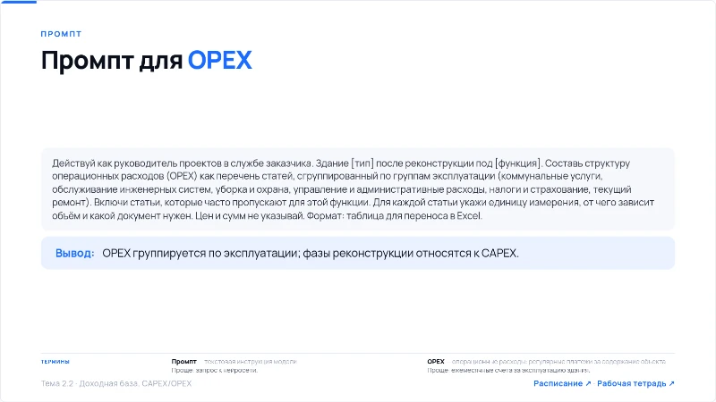
Следующий промпт формирует структуру операционных расходов — регулярных платежей, которые будут сопровождать объект на протяжении всего его жизненного цикла.
Давайте объясним, чем этот запрос отличается от промпта на слайде 9. Разница заключается только в группировке и в самом начале текста. Мы пишем «Здание после реконструкции», чтобы алгоритм переключился из режима стройки в режим ежедневного управления недвижимостью. Группировка здесь совершенно иная. Мы используем шесть групп эксплуатации: коммунальные услуги, обслуживание инженерных систем, уборка и охрана, управление и административные расходы, налоги и страхование, текущий ремонт. Типичная ошибка новичков при работе с нейросетями: они просто копируют промпт CAPEX, меняют слово на OPEX, но оставляют фазы «проектирование, отделка, благоустройство». Это ломает логику модели, так как фазы реконструкции относятся исключительно к CAPEX. Вывод по слайду: OPEX жестко группируется по эксплуатации.
Фрагмент таблицы для вымышленного примера (учебный пример, не данные C52: насосная станция, студия йоги): Группа «Уборка и охрана». Название статьи: Клининг спортивных залов и раздевалок. Единица измерения: квадратный метр площади. От чего зависит объем: от арендопригодной площади полов и частоты уборок по расписанию студии. Какой документ нужен: договор с клининговой компанией с графиком. Группа «Обслуживание инженерных систем». Название статьи: Замена фильтров и обслуживание вентиляции. Единица измерения: количество установок / выездов в квартал. От чего зависит объем: от мощности установок и требований к чистоте воздуха. Какой документ нужен: договор на сервисное обслуживание систем ОВ.
Действуй как руководитель проектов в службе заказчика. Здание [тип] после реконструкции под [функция]. Составь структуру операционных расходов (OPEX) как перечень статей, сгруппированный по группам эксплуатации (коммунальные услуги, обслуживание инженерных систем, уборка и охрана, управление и административные расходы, налоги и страхование, текущий ремонт). Включи статьи, которые часто пропускают для этой функции. Для каждой статьи укажи единицу измерения, от чего зависит объём и какой документ нужен. Цен и сумм не указывай. Формат: таблица для переноса в Excel.
Зачем и экономика
Почему структура операционных расходов требует такой же фанатичной детализации, как и стройка? Разница кроется во времени. Если вы пропустили статью в CAPEX (например, вывоз мусора), вы потеряете значимую сумму один раз. Но если вы пропустили статью в OPEX (например, забыли учесть налог на имущество или регулярное обслуживание сложных фильтров вентиляции), эта пропущенная статья будет снижать ваш чистый операционный доход (NOI) каждый год. Ошибка мультиплицируется на всем сроке жизни проекта. Детализированная структура OPEX, где ничего не забыто, гарантирует, что вы не пообещаете банку тот денежный поток, который по факту уйдет на незапланированную уборку снега.
Контекст и история
Природа операционных расходов такова, что они часто кажутся невидимыми на этапе проектирования. Раньше эксплуатирующие компании привлекались к объекту только после того, как здание было построено. Это приводило к тому, что смонтированные системы было невозможно или невероятно дорого обслуживать. Сегодня профессиональные девелоперы формируют структуру OPEX еще до начала реконструкции. Это позволяет архитекторам сразу заложить правильные решения (например, износостойкие материалы полов), чтобы в будущем снизить статью затрат на текущий ремонт в структуре OPEX.
сгенерируйте структуру OPEX для вашего объекта, обратив особое внимание на группу "текущий ремонт", чтобы понять, какие узлы потребуют постоянного внимания.
Теперь, когда мы сформировали структуру всех возможных расходов, нам нужно подготовить аналогичную структуру для тех денег, которые будут поступать в проект.
Промпт для структуры доходов
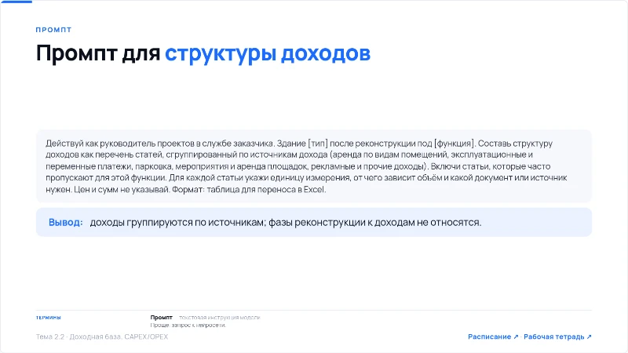
Мы подошли к третьему, завершающему промпту нашего фундаментального каркаса. Этот запрос формирует структуру доходов, которые будет генерировать объект.
Разберем этот запрос по частям, чтобы понимать, от каких упущений мы себя страхуем. Часть первая — роль: «Действуй как руководитель проектов в службе заказчика». Это фокусирует модель на поиске коммерческой выгоды для собственника, а не абстрактного оператора. Часть вторая: «Здание [тип] после реконструкции под [функция]». Здесь алгоритм увязывает особенности исходного здания с новым сценарием. Часть третья — группировка: «сгруппированный по источникам дохода...». Мы жестко задаем пять направлений: аренда по видам помещений, эксплуатационные и переменные платежи, парковка, мероприятия, реклама. Вывод по слайду: доходы группируются исключительно по источникам, а не общим котлом. Часть четвертая: «Включи статьи, которые часто пропускают». Это заставляет нейросеть вытащить скрытый потенциал монетизации функции. Пятая часть: «Для каждой статьи укажи единицу измерения, от чего зависит объём и какой документ или источник нужен». Это дает нам метрику для будущей формулы (например, доход зависит от часов, квадратных метров или количества машиномест). Шестая и седьмая части: запрет на цены и требование табличного формата для Excel.
Сквозной учебный пример, не данные C52 (насосная станция, студия йоги). Как будет выглядеть фрагмент ответа модели? Группа «Мероприятия и аренда площадок». Статья: Аренда залов под профильные мастер-классы в выходные дни. Единица измерения: часы. От чего зависит объем: от свободного расписания студии. Какой документ нужен: договор краткосрочной аренды.
Действуй как руководитель проектов в службе заказчика. Здание [тип] после реконструкции под [функция]. Составь структуру доходов как перечень статей, сгруппированный по источникам дохода (аренда по видам помещений, эксплуатационные и переменные платежи, парковка, мероприятия и аренда площадок, рекламные и прочие доходы). Включи статьи, которые часто пропускают для этой функции. Для каждой статьи укажи единицу измерения, от чего зависит объём и какой документ или источник нужен. Цен и сумм не указывай. Формат: таблица для переноса в Excel.
Зачем и экономика
Этот промпт решает задачу максимизации инвестиционной привлекательности. Если при планировании доходов вы будете считать только базовую, прямую аренду квадратных метров, все остальные потенциальные источники (платная парковка, сдача крыши под базовые станции связи, рекламные поверхности на фасаде, возмещение арендаторами части коммунальных платежей) просто потеряются. Потеря этих статей искусственно занижает ваш будущий чистый операционный доход. Заниженный доход означает, что инвестор может отказаться от проекта, посчитав его нерентабельным, хотя на самом деле проект мог бы приносить значимую сумму дополнительных, скрытых платежей. Структурирование всех ручейков выручки спасает экономику.
Контекст и история
Как эволюционировало планирование доходов? Ранее собственники зданий применяли простейший подход: сдавали объект целиком одному якорному арендатору по фиксированной ставке, вообще не задумываясь о дополнительных сервисах. Сегодня рыночная среда диктует иные правила. Многофункциональные и смешанные форматы (mixed-use) подразумевают глубокую диверсификацию выручки. Доходы от дополнительных услуг, мероприятий и переменных платежей могут составлять существенную часть общей выручки здания, позволяя собственнику хеджировать риски простоя основных площадей.
запустите этот промпт для вашего объекта и проверьте, какие неочевидные источники дохода предложит вам нейросеть для выбранной функции.
Теперь, когда у нас есть готовые пустые структуры для всех трех финансовых корзин (доходы, OPEX и CAPEX), нам необходимо понять, как они стыкуются с нашей итоговой таблицей операционной доходности.
Как стыкуется с таблицей NOI
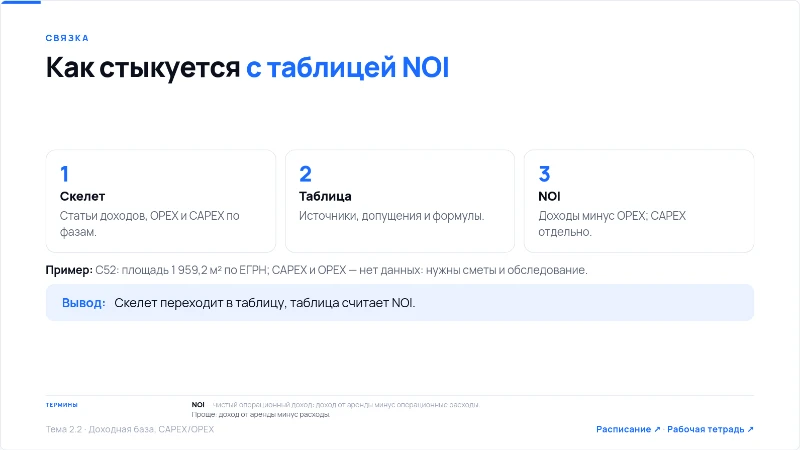
Давайте соберем весь наш финансовый конструктор воедино. Стыковка происходит в три последовательных шага. Шаг первый: Скелет. Это то, чем мы занимались сегодня. У нас сформированы списки: статьи доходов, статьи OPEX и статьи CAPEX, разбитые по фазам (обследование и проектирование, конструктив, инженерия, отделка, благоустройство, согласования). На этом шаге цифр нет. Шаг второй: Таблица. Наш текстовый скелет переносится в табличный редактор, где напротив каждой статьи появляются источники цифр (ссылки на объявления, договоры), финансовые допущения и, самое главное, математические формулы. Шаг третий: NOI. Здесь таблица начинает считать. Формула собирает сумму из блока доходов и вычитает из нее сумму блока OPEX. Обратите внимание: блок CAPEX стоит отдельно, он не вычитается из доходов напрямую. Вывод по слайду: текстовый скелет переходит в строгую таблицу, а таблица бесстрастно считает показатель NOI.
Давайте свяжем это с темой 2.1. Формула чистого операционного дохода выглядит так: NOI \= площадь × ставка в месяц × 12 × загрузка − OPEX. Напоминаю критическое правило: мы умножаем на 12 только в том случае, если ставка заявлена как месячная. Это проверяет человек, алгоритм не может принять это решение за вас. Также мы помним, что площадь в этом первичном расчёте — это допущение с указанием источника. Точные базы GBA (общая площадь здания), МОП (места общего пользования) и GLA (арендопригодная площадь) уточняются исключительно по документам БТИ, как мы разбирали в Части 3. И финальный аккорд этой логики: положительный NOI является необходимым, но не достаточным условием для принятия решения о реализации проекта. Положительный операционный доход просто говорит о том, что здание не убыточно в моменте.
Зачем и экономика
Этот пошаговый процесс стыковки защищает инвестора от самообмана. Если вы попытаетесь пропустить шаг со сбором скелета OPEX и сразу перейдете к таблице, вы неизбежно недооцените расходы на эксплуатацию. Заниженный OPEX в шаге 1 приведет к тому, что в шаге 3 (при расчете формулы) ваш NOI будет математически правильно, но фактически ложно завышен. Вы покажете инвестору блестящую доходность, но в реальности этих денег не будет. Структура без сумм — это гарант того, что вы не забыли вычесть из доходов налоги, уборку снега и замену ламп.
Контекст и история
Методика разделения концептуальной структуры затрат и самой финансовой модели (Excel-таблицы) — это золотой стандарт финансового моделирования. Аналитики сначала согласовывают с инвестором саму архитектуру бизнеса: за что мы платим и на чем зарабатываем. И только после утверждения этой архитектуры в модель начинают подгружаться реальные цифры из коммерческих предложений. Такой подход исключает споры о концепции на этапе, когда формулы уже написаны.
проверьте, что в вашей Excel-таблице блок капитальных затрат (CAPEX) визуально отделен от расчета операционного дохода (NOI) и не пересекается с ним формулами.
Скелет статей собран. Теперь мы сведём всё, чего в нём не хватает, в реестр пробелов «документ → зависимость», а затем разберём клики, проверку результата, перенос в Excel, типичные ошибки и путь в основном контуре.
Итог главы
Минимальный результат слушателя
- В табличном редакторе созданы три пустые, но детально структурированные таблицы: структура доходов, структура операционных расходов (OPEX) и структура капитальных затрат (CAPEX) для собственного объекта.
- Таблица CAPEX жестко разбита по шести фазам реализации: обследование и проектирование, конструктив, инженерия, отделка, благоустройство, согласования.
- Во всех таблицах присутствуют колонки: наименование статьи, единица измерения, от чего зависит объем, требуемый документ. Суммы в таблицах отсутствуют.
Что не разбираем
- Заполнение полученных структур реальными ценами и суммами (это задача сметчиков).
- Практическую реализацию промптов в интерфейсах нейросетей, процесс кликов и проверку ответов (это материал следующего практического занятия).
- Расчет сложных инвестиционных показателей окупаемости: NPV (чистая приведенная стоимость) и IRR (внутренняя норма доходности) — смотрите тему 2.4.
Практическая памятка
Для выполнения самостоятельной работы вам необходимо:
- Иметь на руках базовые характеристики вашего объекта (тип здания, площадь) и выбранную на этапе HBU функцию-победителя.
- Создать пустой файл в Excel для копирования туда структур, сгенерированных языковыми моделями. Помните: лекция проходит в формате академического чтения и разбора логики. Ничего открывать в нейросетях, запускать промпты или демонстрировать экран вживую во время трансляции не нужно.
Оговорки
| Источник | Можно утверждать | Нельзя утверждать |
|---|---|---|
| Ответ нейросети (Gemini и др.) | Наличие логической структуры статей доходов и расходов. | Достоверность ссылок на документы или актуальность цен. |
| Базовый промпт по функции | Перечень типовых угроз и статей затрат для данного бизнеса. | Точный исчерпывающий перечень работ для конкретного здания без осмотра. |
| Текущая таблица с допущениями | Наглядную архитектуру будущих денежных потоков. | Фактический размер чистого операционного дохода (NOI) без смет. |
Проверяем и забираем в работу
Реестр пробелов: документ → зависимость
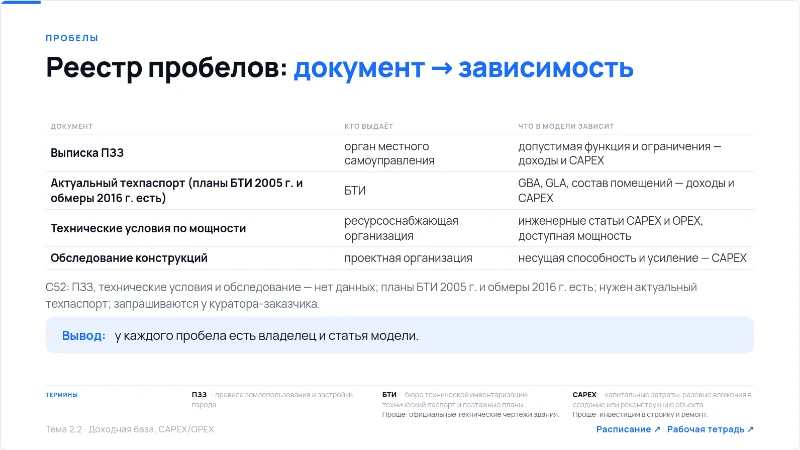
Когда структура статей собрана, становится видно, что часть данных по объекту у нас есть, а части документов не хватает. Чтобы эта нехватка не оставалась размытой заметкой на полях, мы сводим её в реестр пробелов по логике «документ → зависимость». Реестр связывает каждый отсутствующий документ с организацией, которая его выдаёт, и с конкретными разделами финансовой модели, которые от него зависят.
В базовой таблице реестра четыре ключевые позиции. Первая строка: выписка ПЗЗ, которую выдаёт орган местного самоуправления. Она определяет допустимую функцию и градостроительные ограничения, а значит, напрямую влияет на блок доходов и на CAPEX. Вторая строка: актуальный техпаспорт, который выдаёт БТИ. Он фиксирует GBA, GLA и точный состав помещений, от которых зависят и доходы, и объёмы работ в CAPEX.
Третья строка: технические условия по мощности, которые выдаёт ресурсоснабжающая организация. От них зависят доступная мощность, инженерные статьи CAPEX и эксплуатационные статьи OPEX. Четвёртая строка: обследование конструкций, которое выполняет проектная организация. Оно определяет несущую способность и потребность в усилении, что напрямую формирует статьи CAPEX. Главная мысль этого слайда проста: у каждого пробела есть конкретный владелец и конкретная статья модели, поэтому реестр превращает пометку «нет данных» в понятный план запросов.
Зачем и экономика
Какую задачу в деньгах и рисках решает этот реестр? Без него пометка «нет данных» остаётся пассивной констатацией, о которой легко забыть при переходе к расчётам. Если пробел не привязан к конкретной статье модели, команда может принять инвестиционное решение на неполной базе, а недостающий документ всплывёт уже на этапе проектирования или стройки.
Последствия для экономики прямые. Отсутствие выписки ПЗЗ грозит запретом выбранной функции и потерей всех затрат на предпроектную подготовку. Отсутствие актуального техпаспорта искажает сдаваемую площадь, из-за чего прогноз доходов расходится с реальностью, а объёмы отделки в CAPEX оказываются заниженными. Отсутствие технических условий и обследования конструкций создаёт риск внезапного появления значимых сумм в инженерной и конструктивной фазах бюджета, которые не были учтены в модели. Реестр пробелов заранее показывает, какие решения нельзя принимать до закрытия конкретных документов.
Контекст и история
В практике управления проектами недвижимости работа на ранних стадиях почти всегда начинается при неполном комплекте документов. Опытные команды никогда не останавливают структурирование модели в ожидании идеального архива, но и не подменяют отсутствующие факты догадками. Вместо этого они ведут отдельный реестр открытых вопросов и зависимостей, чтобы параллельно с проработкой концепции запускать сбор документов. Такой подход дисциплинирует проектную группу и делает риски прозрачными для всех участников.
составьте для своего объекта таблицу реестра пробелов из четырёх столбцов — «Документ», «Кто выдаёт», «Что определяет», «На какие разделы модели влияет» — и внесите туда все недостающие документы.
Реестр пробелов у нас есть. Теперь пройдём путь к таблице по шагам: что именно вы делаете от запуска промпта до готового ответа модели.
Клики: по шагам
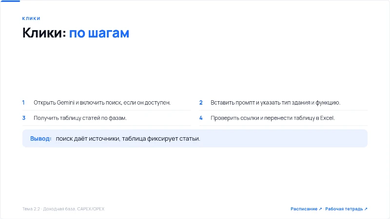
Как выглядит пошаговый маршрут работы с выбранным нами флагманским сервисом расширенного контура? Шаг первый: открыть языковую модель (на нашем примере это Gemini) и убедиться, что функция поиска включена, если она доступна. Поиск позволит алгоритму не просто генерировать текст, но и обращаться к внешним материалам. Шаг второй: вставить наш заранее подготовленный промпт в диалоговое окно. В квадратные скобки запроса вы должны указать только общие вводные: тип здания и коммерческую функцию, выбранную на шаге HBU. Мы рекомендуем вставлять только типологию и назначение, не загружая в чат полные документы. Шаг третий: отправить запрос и получить от алгоритма структурированную таблицу статей затрат, разбитую по утвержденным фазам (обследование и проектирование, конструктив, инженерия, отделка, благоустройство, согласования). Шаг четвертый: проверить предложенные сервисом ссылки (если они есть) и перенести очищенную таблицу в ваш табличный редактор (например, в Excel). Вывод по данному слайду: поиск дает внешние источники и ориентиры, а таблица жестко фиксирует перечень статей.
Зачем и экономика
Какую конкретную задачу решает эта жесткая дисциплина кликов и какая цена стоит за пропущенным шагом? Ключевая финансовая угроза кроется в четвертом шаге — ручной проверке ссылок. Если вы пропустите этот этап и слепо скопируете таблицу, сгенерированную нейросетью, в вашу финансовую модель неизбежно попадет несуществующая статья расходов. Например, модель может сгенерировать строку «Обязательная сертификация энергоэффективности фасадов по зеленому стандарту» и даже дать на нее ссылку. Если вы не проверите, применим ли этот стандарт к вашей функции и региону, вы заложите в бюджет значимую сумму на процедуру, которая вам по закону не требуется. Это искусственно увеличит ваш CAPEX и отпугнет инвестора мнимой дороговизной проекта. Интеллектуальная лень на этом этапе конвертируется в прямые убытки.
Контекст и история
В проектной практике сбор исчерпывающих перечней затрат (без использования нейросетей) всегда представлял собой тяжелый аналитический процесс. Руководители проектов открывали огромные, неповоротливые классификаторы и неделями вычеркивали из них лишнее, пытаясь адаптировать типовой сметный справочник под конкретное здание. Затем они шли в интернет и вручную искали актуальные рыночные требования для новых коммерческих функций. Современный подход с использованием больших языковых моделей позволяет мгновенно синтезировать профильный чек-лист, скрещивая тип здания с функцией. Однако алгоритм лишь ускоряет агрегацию данных, но не отменяет необходимости экспертного фильтра.
вставьте промпт в выбранный сервис, указав тип вашего здания и функцию, и добейтесь получения таблицы статей.
Получить таблицу от искусственного интеллекта — это лишь половина дела. Давайте разберем детальный чек-лист того, как именно мы должны проверять каждую сгенерированную строку.
Как проверить
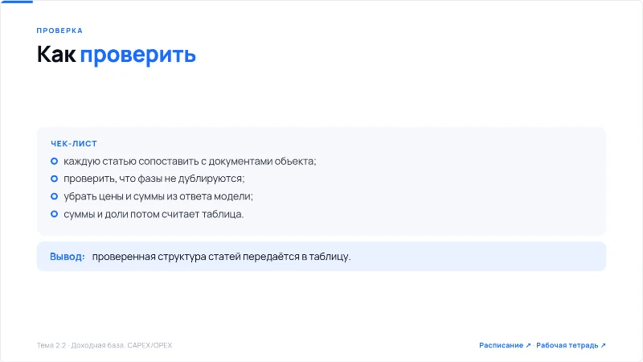
Перед нами чек-лист ручной верификации. Получив ответ от алгоритма, вы обязаны пропустить его через строгий фильтр. Во-первых, каждую предложенную статью необходимо сопоставить с документами вашего объекта. Если документов пока нет, статья помечается как требующая проверки, но не принимается на веру. Во-вторых, необходимо проверить, что фазы проекта не дублируются. Модель может по ошибке засунуть «монтаж вентиляции» и в фазу «инженерия», и в фазу «отделка». В-третьих, вы должны безжалостно убрать все цены и суммы из ответа модели, если она их всё-таки сгенерировала вопреки нашему запрету. И в-четвертых, вы должны помнить базовое правило: сами суммы и доли затрат потом считает таблица, а не текстовый чат. Вывод по этому слайду: проверенная, очищенная от галлюцинаций структура статей передается в вашу рабочую таблицу для дальнейшего наполнения.
Зачем и экономика
Почему проверка структуры — это прямая страховка вашего операционного дохода? Представьте, что модель сгенерировала структуру операционных расходов (OPEX) и дважды вписала туда техническое обслуживание систем безопасности: один раз в группу «охрана», а другой раз в группу «обслуживание инженерных систем». Если вы не проверите дублирование и отдадите эту структуру экономисту, он запросит два коммерческих предложения и дважды вычтет эту значимую сумму из ваших арендных доходов. Ваш расчетный NOI искусственно упадет, и проект потеряет инвестиционную привлекательность на бумаге из-за банального задвоения строк. Проверка спасает экономику от технических ошибок машинной генерации.
Контекст и история
В проектной практике перечни капитальных затрат никогда не утверждаются одним человеком. Существует правило перекрёстного просмотра. Структуру, собранную руководителем проекта, обязательно вычитывает профильный сметчик и технический заказчик. Один смотрит на перечень с точки зрения технологии строительства, другой — с точки зрения финансового планирования. Нейросеть же выступает в роли быстрого, но невнимательного стажера. Вы, как руководитель, выполняете тот самый перекрестный контроль, выявляя логические противоречия и отсекая информационный мусор.
▶ ПРИМЕР ПРОВЕРКИ Разберем процесс на нашем вымышленном сквозном примере (учебный пример, не данные C52). Объект: насосная станция, функция: студия йоги. Нейросеть сгенерировала нам структуру CAPEX. Берем строку 1: Фаза «Обследование и проектирование». Статья: «Проведение замеров уровня вибрации от соседнего цеха». Мы сопоставляем это с документами. Наше здание стоит отдельно, соседних работающих цехов нет. Следовательно, статья для нас нерелевантна. Мы её удаляем. Берем строку 2: Фаза «Инженерия». Статья: «Установка систем приточно-вытяжной вентиляции — 500 000 рублей». Что мы делаем? Во-первых, мы подтверждаем саму статью, так как для студии йоги вентиляция критически важна. Во-вторых, мы жестко удаляем цифру «500 000 рублей». Мы не знаем, откуда модель её взяла, она не имеет источника. Мы оставляем только текст статьи. Берем строку 3: Фаза «Согласования». Статья: «Получение заключения Роспотребнадзора для спортивных объектов». Статья релевантна, фаза указана верно. Мы оставляем эту строку. В результате такой проверки из сырых строк остаются только проверенные, очищенные от ложных сумм и готовые к работе.
проверьте полученную таблицу по чек-листу, обязательно удалив любые цифры стоимости, которые могла сгенерировать модель.
После того как мы провели ручную чистку, нам необходимо превратить этот текстовый список в настоящий рабочий инструмент аналитика.
Как забрать в работу
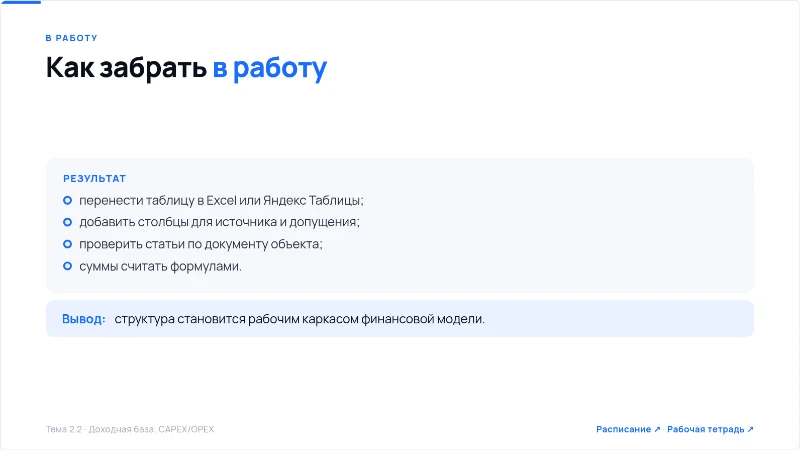
Как мы превращаем текстовый ответ нейросети в рабочий финансовый документ? Первое: вы переносите очищенную от галлюцинаций таблицу в ваш табличный редактор (Excel или Яндекс Таблицы). Второе: вы добавляете к ней важнейшие столбцы, которых изначально не было в промпте — «Источник» (откуда взята конкретная сумма) и «Допущение» (какая логика стоит за расчетом, если точной суммы нет). Третье: вы еще раз проверяете все статьи, сверяя их с имеющимися документами вашего объекта. Четвертое: все суммы, когда они появятся, вы будете считать исключительно формулами внутри этого редактора. Вывод по слайду: полученная структура становится не просто красивым списком, она становится жестким рабочим каркасом вашей финансовой модели.
Зачем и экономика
Этот шаг напрямую связывает работу с нейросетью с фундаментальным принципом девелопмента: «У каждой цифры есть документальный источник». Если вы просто оставите перечень статей в текстовом файле, вы не сможете им управлять. Перенос в Excel с добавлением столбцов «Источник» и «Допущение» переводит вашу работу из формата «сбор идей» в формат «инвестиционный контроль». Этот каркас в дальнейшем напрямую интегрируется с расчетом чистого операционного дохода (NOI), который мы обсуждали в теме 2.1. Если структура OPEX перенесена небрежно, ваш NOI будет ложным. Более того, этот выверенный каркас является базой для формирования итогового финансового меморандума (Артефакт 2), который мы будем собирать в теме 2.5. Без него вы просто не сможете перейти к финальной стадии проекта.
Контекст и история
В инвестиционном моделировании существует правило «прослеживаемости данных». Любой аудитор или инспектор банка, проверяющий вашу финансовую модель, должен иметь возможность кликнуть на любую цифру в сводной таблице и по цепочке формул дойти до первичного документа (договора, коммерческого предложения или рыночного отчета). Если цифра «висит в воздухе», то есть введена вручную без указания источника и допущения, вся модель признается недействительной. Добавляя эти столбцы в каркас прямо сейчас, мы закладываем фундамент институционального качества нашей работы.
Что делать, если при переносе структуры вы обнаружили, что нейросеть всё-таки проигнорировала запреты и выдала готовые суммы?
Типичный сбой и что делать
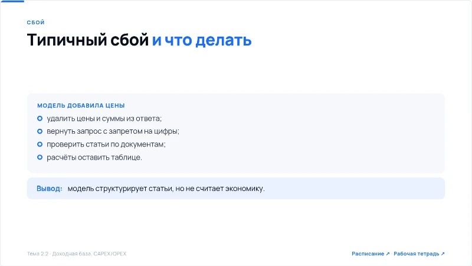
Самый типичный сбой на этапе работы со структурой затрат — это когда языковая модель, несмотря на прямой запрет в промпте («Цен и сумм не указывай»), добавляет в таблицу колонку с ориентировочными ценами. Модель пытается быть чрезмерно «услужливой». Что делать в этой ситуации? Первое: немедленно удалить эти цены и суммы из полученного ответа. Второе: если таблица испорчена, вернуть запрос в чат, еще жестче подчеркнув запрет на цифры. Третье: заново проверить оставшиеся текстовые статьи по вашим документам. Четвертое: оставить любые расчёты исключительно табличному редактору на последующих этапах. Вывод по слайду: модель превосходно структурирует статьи, но она не считает экономику и не знает актуальных локальных цен.
Зачем и экономика
Почему цены, предложенные моделью, так опасны для экономики вашего проекта? Во-первых, у этих цифр нет проверяемого источника. Модель могла сгенерировать среднюю стоимость ремонта на основе данных трехлетней давности. Во-вторых, вы не можете проверить, что именно включено в эту цену (включает ли она НДС, доставку, монтаж). В-третьих, и это самое главное, такие цифры создают иллюзию ложной точности. Если вы скопируете эту необоснованную цифру в свой бюджет и покажете инвестору, вы зафиксируете ожидание стоимости, которое в реальности будет превышено в несколько раз. Ложная точность на старте — это гарантированный конфликт с инвестором на финише, когда реальные сметы от подрядчиков вскроют правду.
Контекст и история
Языковые модели обладают встроенным механизмом завершения контекста. Когда они видят запрос на структуру затрат, их алгоритмический опыт подсказывает, что такие структуры обычно сопровождаются цифрами. Поэтому, даже при наличии запрета, вероятность генерации случайной цифры остается. Это не ошибка конкретного сервиса, это особенность архитектуры генеративного интеллекта. Наша задача — не перевоспитать алгоритм, а жестко контролировать выходной результат.
Сбой с выдуманными ценами входит в короткий список типичных ошибок сборки скелета. Сведём этот список целиком.
Типичные ошибки
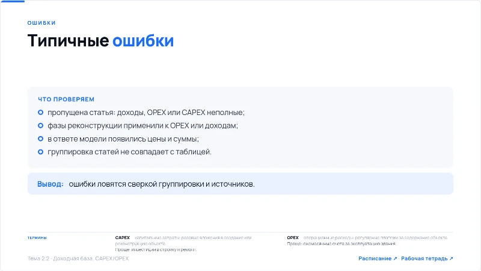
При сборке скелета финансовой модели с помощью языковых моделей регулярно повторяются четыре типичные ошибки. Первая ошибка — пропущена статья: в результате структура доходов, OPEX или CAPEX оказывается неполной, и часть реальных потоков просто выпадает из поля зрения. Вторая ошибка — фазы реконструкции применили к OPEX или доходам, перенеся строительную логику туда, где должна работать логика регулярной эксплуатации или источников выручки.
Третья ошибка — в ответе модели появились цены и суммы, несмотря на прямой запрет в промпте. Четвёртая ошибка — группировка статей не совпадает с рабочей таблицей, в которую планируется перенос данных. Главная мысль этого слайда: все четыре ошибки надёжно ловятся не интуицией, а системной сверкой группировки и проверкой источников до того, как в таблицу попадёт первая формула.
Зачем и экономика
Разберём, чем каждая из этих четырёх ошибок грозит проекту в деньгах. Первая ошибка — пропущенная статья. Если пропущена статья доходов, модель занижает потенциал объекта, и перспективный проект может быть отклонён напрасно. Если пропущена статья OPEX, операционные расходы оказываются заниженными, а расчётный NOI — искусственно завышенным на протяжении всего срока эксплуатации здания. Если пропущена статья CAPEX, в процессе реконструкции возникает непредвиденная значимая сумма вне утверждённого бюджета, что создаёт угрозу кассового разрыва.
Вторая ошибка — применение фаз реконструкции к OPEX или доходам. Смешение разовых вложений и регулярных потоков разрушает логику расчёта чистого операционного дохода. Регулярные эксплуатационные затраты путаются с капитальными, бюджет эксплуатации невозможно корректно передать в управление, а оценка жизнеспособности функции искажается.
Третья ошибка — цены и суммы в ответе модели. Такие цифры не имеют проверяемого источника и создают ложную точность. Если опереться на них при обсуждении бюджета, реальные коммерческие предложения подрядчиков и рыночные ставки позже покажут существенное расхождение, что приведёт к пересмотру всей экономики проекта.
Четвёртая ошибка — несовпадение группировки статей с рабочей таблицей. При переносе строки попадают в чужие разделы или дублируются в разных группах. В результате итоговые формулы либо считают одну и ту же затрату дважды, занижая NOI, либо теряют часть статей при суммировании, завышая ожидаемый финансовый результат.
Контекст и история
Структурные ошибки существовали задолго до появления языковых моделей. В обычной проектной работе аналитики нередко копируют старые таблицы с прошлых объектов, забывая поменять группировку или удаляя нужные строки вместе со старыми цифрами. Работа с нейросетью ускоряет генерацию текста, но делает такие промахи менее заметными на первый взгляд, потому что таблица выглядит аккуратно. Именно поэтому профессиональная проверка всегда начинается со сверки заголовков, логики разделов и чистоты источников.
проверьте свои три таблицы на наличие каждой из четырёх ошибок — убедитесь, что фазы реконструкции есть только в CAPEX, цены удалены, а названия групп совпадают с вашим шаблоном.
Ошибки сведены в короткий список. Теперь посмотрим, как этот же путь выглядит в основном контуре, без дополнительных функций.
Путь в основном контуре
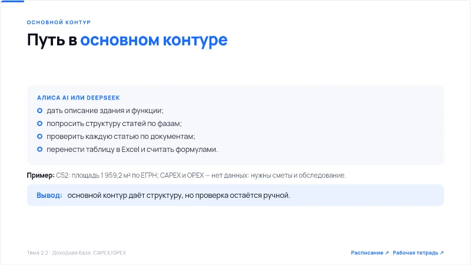
Если вы работаете в условиях жестких корпоративных ограничений или используете сервисы основного контура (Алиса AI или DeepSeek), ваш путь будет выглядеть следующим образом. Вы даете сервису короткое, точное описание вашего здания и выбранной коммерческой функции. Вы просите сгенерировать структуру статей по нашим утвержденным фазам, используя те же самые промпты. Вы получаете текстовую таблицу. Однако, в отличие от расширенного контура с функцией поиска, вы не получаете внешних ссылок на источники или стандарты. Вы обязаны еще более тщательно проверить каждую выданную статью, опираясь только на свои документы. После этого вы также переносите очищенную таблицу в Excel и готовите её к ручному расчету формулами. Вывод по этому слайду: основной контур отлично справляется с генерацией структуры, но вся тяжесть проверки источников и рыночных ориентиров ложится на вас.
Зачем и экономика
Этот альтернативный путь необходим для обеспечения непрерывности работы в любых условиях. Если у вас нет доступа к зарубежным сервисам или ваша служба безопасности запрещает работу с ними, вы всё равно не должны возвращаться к ручному написанию смет с чистого листа. Использование основного контура для генерации базового WBS (иерархической структуры работ) экономит дни работы аналитика, даже с учетом необходимости ручного поиска рыночных бенчмарков.
Контекст и история
Отечественные языковые модели обучаются на огромных массивах российской нормативной базы и специфической деловой лексике. Поэтому структура затрат, сгенерированная в основном контуре, часто лучше отражает реалии отечественного документооборота (например, правильное наименование этапов согласования в госэкспертизе), чем ответы зарубежных моделей, которые могут предлагать нерелевантные западные стандарты. Это их сильная сторона.
Каким бы контуром вы ни пользовались, итог один: структура без цен и реестр пробелов. Зафиксируем комплект материалов, который уходит в Задание №3.
Что берём в Задание №3
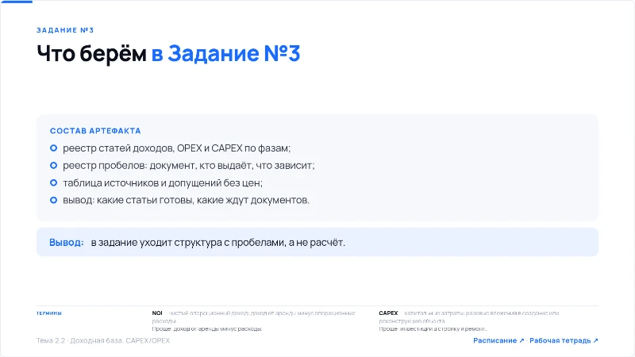
Завершая тему 2.2, мы чётко фиксируем состав материалов, который слушатель забирает в Задание №3. Итоговый комплект состоит из четырёх обязательных элементов. Первый элемент — реестр статей доходов, OPEX и CAPEX, где капитальные затраты строго распределены по шести фазам: обследование и проектирование, конструктив, инженерия, отделка, благоустройство, согласования.
Второй элемент — реестр пробелов, в котором по каждому отсутствующему документу указано, кто его выдаёт и какие именно статьи модели от него зависят. Третий элемент — таблица источников и допущений без цен и сумм, подготовленная для переноса в расчётную модель. Четвёртый элемент — короткий письменный вывод о том, какие статьи уже готовы к дальнейшей работе, а какие ждут поступления документов. Главная мысль этого слайда: в Задание №3 уходит выверенная структура с честно обозначенными пробелами, а не готовый финансовый расчёт.
Зачем и экономика
Почему на этом этапе ценность представляет именно структура с пробелами, а не приблизительный расчёт с заполненными цифрами? Приблизительный расчёт, собранный на догадках, маскирует риски за ровными итоговыми строками. Инвестор или руководитель видит итоговую сумму и начинает воспринимать её как подтверждённый бюджет, хотя под ней нет ни обследования, ни технических условий, ни актуальных площадей.
Передача в работу чистой структуры с реестром пробелов защищает проект от скрытых затрат и преждевременных обязательств. Она даёт команде прозрачный инструмент управления: сразу видно, какие разделы экономики уже обеспечены фактурой, а какие требуют запроса документов до того, как тратить время на сбор цен и расчёт доходности.
Контекст и история
Разделение этапа структурирования и этапа оценки стоимости — устойчивая практика в управлении проектами реконструкции. Пока участники не согласовали единый перечень статей и не зафиксировали список недостающих исходных данных, переходить к сбору коммерческих предложений бессмысленно: разные подрядчики посчитают разный объём работ, а экономист не сможет свести эти данные в сопоставимую таблицу. Сначала утверждается каркас, затем закрываются пробелы в документах, и только после этого появляются цифры.
соберите в одном файле четыре элемента для Задания №3 — три реестра статей без цен, реестр пробелов, таблицу источников и допущений и короткий итоговый вывод по готовности статей.
С этим выверенным комплектом структуры и пробелов вы готовы к выполнению Задания №3 и переходу к следующим этапам финансового моделирования.
Итог главы
Минимальный результат слушателя
В рабочей тетради или в табличном редакторе созданы три детально структурированные таблицы для собственного объекта (все без сумм):
- Структура доходов (сгруппированная по источникам).
- Структура операционных расходов (OPEX) (сгруппированная по группам эксплуатации).
- Структура капитальных затрат (CAPEX) (жестко разбитая по шести фазам реализации). Во всех таблицах присутствуют колонки для источника данных и требуемого документа.
- Реестр пробелов «документ → зависимость»: для каждого отсутствующего документа указано, кто его выдаёт и какие статьи модели от него зависят.
Что не разбираем
- Расчет сложных дисконтированных инвестиционных показателей: NPV (чистая приведенная стоимость) и IRR (внутренняя норма доходности) — смотрите тему 2.4.
- Процесс сбора реальных коммерческих предложений от подрядчиков для наполнения структуры.
- Составление архитектурно-строительных смет по форме КС-2/КС-3 (это задача инженеров-сметчиков, мы собираем укрупненный бюджет инвестора).
Практическая памятка
Для выполнения самостоятельной работы после лекции вам необходимо:
- Подготовить короткое текстовое описание вашего объекта (тип здания и утвержденная коммерческая функция).
- Открыть выбранный сервис (например, Gemini с включенным поиском) и последовательно применить три промпта.
- Вручную очистить полученные таблицы от случайных цифр и перенести их в Excel. Помните: лекция проходит в формате чтения. Ничего кликать, открывать нейросети или демонстрировать экран вживую во время трансляции не нужно.
Оговорки
| Источник | Можно утверждать | Нельзя утверждать |
|---|---|---|
| Сгенерированная структура (WBS) | Наличие базовых статей затрат и фаз реконструкции. | Исчерпывающую полноту перечня без технического обследования. |
| Функция поиска в LLM | Наличие внешних ссылок и упоминаний стандартов. | Актуальность и юридическую силу найденных документов без ручной проверки. |
| Пустая таблица в Excel | Готовность архитектуры для расчета будущих денежных потоков. | Финальный размер капитальных вложений и окупаемость. |
| Реестр пробелов | Какого документа нет, кто его выдаёт и какие статьи модели от него зависят | Что документ запрошен или получен, пока это не подтверждено |
Итог темы 2.2
Коллеги, мы завершили работу над формированием скелета нашей финансовой модели. Что мы вынесли из этой темы? Мы научились жестко разделять доходы, капитальные затраты (CAPEX) по фазам реконструкции и операционные расходы (OPEX). Мы поняли, что пропуск любой статьи на этапе проектирования — это прямой удар по окупаемости и будущему NOI. Мы освоили три профессиональных промпта, которые заставляют нейросеть генерировать исчерпывающую структуру без выдуманных цен. И самое главное, мы научились переносить этот текстовый каркас в Excel, превращая его в рабочий инвестиционный инструмент, готовый к наполнению проверенными цифрами.